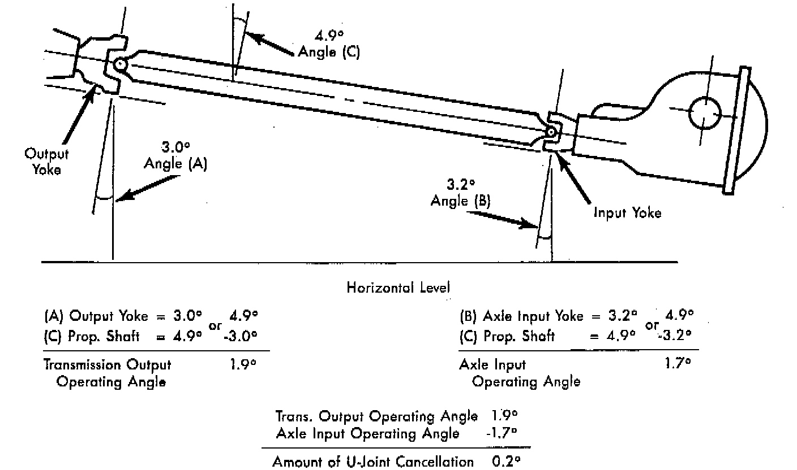
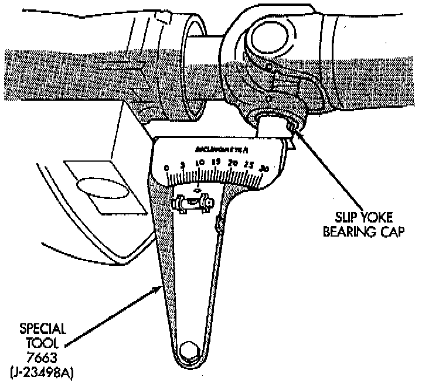
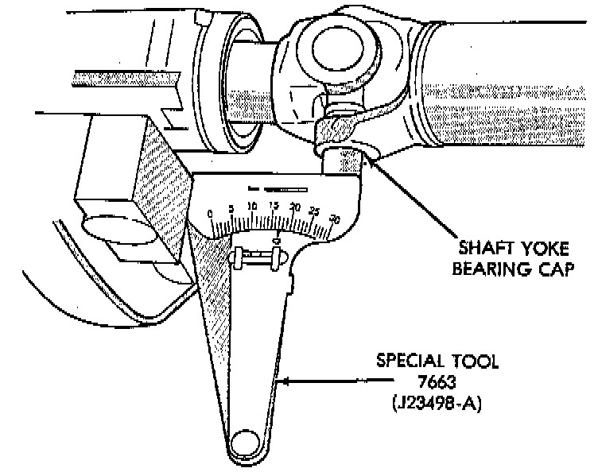
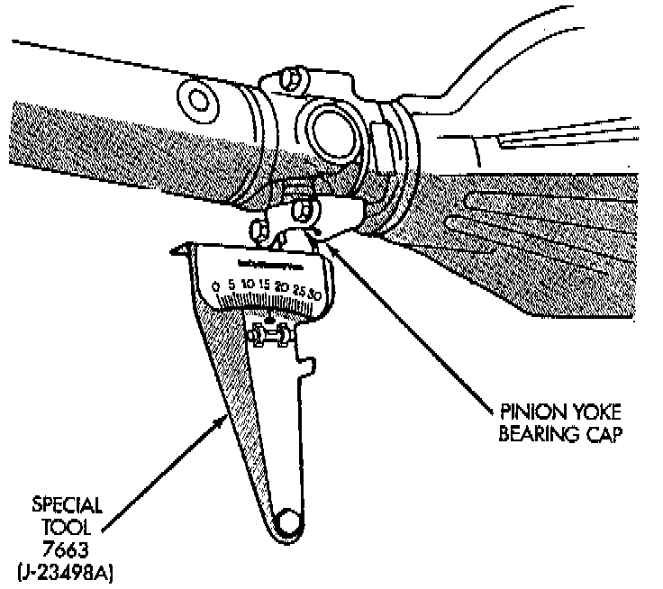

Drive/Propeller Shafts, Bearings and Joints: Service and Repair
PREPARATIONBefore measuring universal joint angles, the following must be done;
- Inflate all tires to correct pressure.
- Check the angles in the same loaded or unloaded condition as when the vibration occurred. Propeller shaft angles change according to the amount of load in the vehicle.
- Check the condition of all suspension components and verify all fasteners are torqued to specifications.
- Check the condition of the engine and transmission mounts and verify all fasteners are torqued to specifications.

MEASUREMENT
To accurately check driveline alignment, raise and support the vehicle at the axles as level as possible. Allow the wheels and propeller shaft to turn. Remove any external bearing snap rings (if equipped) from universal joint so that the inclinometer base sits flat.
1. Rotate the shaft until transmission/transfer case output yoke bearing cap is facing downward. Always make measurements from front to rear.
Front (Output) Angle Measurement (A):

2. Place Inclinometer on yoke bearing cap (A) parallel to the shaft. Center bubble in sight glass and record measurement. This measurement will give you the transmission or Output Yoke Angle (A).
Propeller Shaft Angle Measurement (C):

3. Rotate propeller shaft 90 degrees and place Inclinometer on yoke bearing cap parallel to the shaft. Center bubble in sight glass and record measurement. This measurement can also be taken at the rear end of the shaft. This measurement will give you the propeller shaft angle (C).
4. Subtract smaller figure from larger (C minus A) to obtain transmission output operating angle.
Rear (Input) Angle Measurement (B):

5. Rotate propeller shaft 90 degrees and place Inclinometer on pinion yoke bearing cap parallel to the shaft. Center bubble in sight glass and record measurement. This measurement will give you the pinion shaft or input yoke angle (B).
6. Subtract smaller figure from larger (C minus B) to obtain axle Input Operating Angle. Refer to rules given below and the example in for additional information.
- Good cancellation of U-joint operating angles (within 1°).
- Operating angles less than 3°.
- At least 1/2 of one degree continuous operating (propeller shaft) angle.